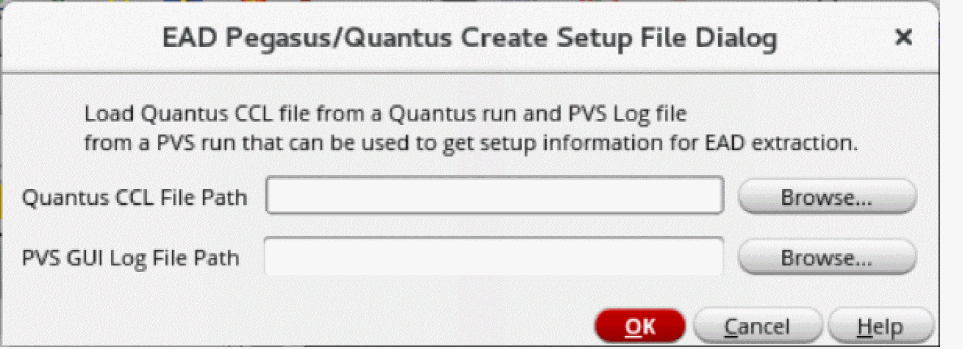
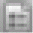

8
Quantus-Pegasus Integration for Partial Layouts
By combining parasitics extraction and physical verification sign-off capabilities of Cadence® Quantus™ Extraction Solution and Cadence® Pegasus™ Verification System, respectively, Virtuoso Layout Suite EXL provides sign-off level accuracy in EAD.
This flow requires all devices to be placed in the layout; the position of these devices may however not be the final.This flow enables the user to specify a reference net, known as the ground net, before extraction rather than before simulation.
Related Topics
Creating Pegasus/Quantus Setup for Parasitics Extraction
EAD Pegasus/Quantus Create Setup File Dialog Form
Creating Process and Setup Files Manually
Extracting Parasitics from a Partial Layout
Viewing and Analyzing Parasitics
Resimulating Designs with Extracted Parasitics
Using Distributed Processing Jobs
Creating Pegasus/Quantus Setup for Parasitics Extraction
Before creating the Pegasus/Quantus setup for parasitics extraction, you must have the following:
- LVS rules file with the LVS settings for the reference design
- Applicable Pegasus license
- Applicable Quantus license
- Quantus CCL file with the correct settings for the reference design
To create Pegasus/Quantus setup for parasitics extraction:
- Open EAD Browser from either Virtuoso Layout Suite EXL or MXL.
-
From the toolbar of EAD Browser, click
 and select Create Pegasus-Quantus Setup.
and select Create Pegasus-Quantus Setup.
The EAD Pegasus-Quantus Create Setup File Dialog form opens.
 - In the Quantus CCL File Path field, type the file path of the Quantus CCL file. You can also click Browse to select the Quantus CCL file.
- In the PVS GUI Log File Path field, type the file path of the PVS GUI log file. You can also click Browse to select the PVS GUI log file.
- Click OK.
The setup file and process files are saved to the following locations inside your current working directory, respectively:
After you load the EAD Pegasus/Quantus Setup for extraction, the following options become disabled:
Related Topics
EAD Pegasus/Quantus Create Setup File Dialog Form
Extracting Parasitics from a Partial Layout
Creating Process and Setup Files Manually
Creating Process and Setup Files Manually
You can also create the process.ini and setup.ini files manually.
To create the process.ini file manually:
- Open a new file using any text editor.
-
Type the following in the file:
[corners]
technologyLibraryFile= /<path_to_the_directory>/pvtech.lib
1\technologyName=<name_of_technology_file>
1\name=nom
size=1
-
Save the file at the following location inside the current working directory:
.cadence/dfII/EAD/1/setup/setup.ini
To create the setup.ini file manually:
- Open a new file using any text editor.
-
Type the following in the file:
[connectivity]
pvsRulesFile=/<path_to_the_directory>/pvs.rul
[extraction]
processSettings=./.cadence/dfII/EAD/1/process/process.ini
-
Save the file at the following location inside the current working directory:
.cadence/dfII/EAD/1/setup/setup.ini
Related Topics
EAD Pegasus/Quantus Create Setup File Dialog Form
Extracting Parasitics from a Partial Layout
Viewing and Analyzing Parasitics
Extracting Parasitics from a Partial Layout
With the in-design integration of Quantus, Virtuoso Layout EXL provides ability to extract LDE parameters and RC parasitics from a partial layout. This enables quicker feedback loop to run layout-aware re-simulation, and tuning the circuit performance early without waiting for a complete LVS -lean layout.
To extract parasitics from a partial layout:
- Create the Pegasus-Quantus Setup using the EAD Pegasus/Quantus Create Seup Dialog form.
-
From the toolbar of EAD Browser, click
 and select the Pegasus-Qunatus setup.
and select the Pegasus-Qunatus setup.
All available nets from the setup are loaded in the EAD Brwoser. -
In the Ground Net field, specify a ground net. Alternatively, right-click a net in the EAD browser table and then select Set As Ground Net.
You can also keep the default selection0, which indicates that extraction are run with respect to an imaginary ground net. -
From the toolbar of EAD Browser, click
 and select Extract Parasitics For All Nets.
and select Extract Parasitics For All Nets.
The extraction process is completed in the following four phases. - After the extraction is complete, extraction results are displayed in the EAD Browser.
Related Topics
EAD Pegasus/Quantus Create Setup File Dialog Form
Creating Pegasus/Quantus Setup for Parasitics Extraction
Viewing and Analyzing Parasitics
Extracting LDE Parameters
In addition to parasitics extraction, you can also choose to extract only LDE (layout-dependent effects) parameters.
The extraction of LDE parameters is carried out in following phases:
- Pegasus is run with either a Pegasus Interactive or a sign-off license on the layout view and extracts all the devices and their device parameters.
- Quantus is run with either a Quantus Interactive or a sign-off license, keeping RC extraction turned off, to generate a SmartView. This SmartView consists only layout- extracted devices and their parameters.
- The SmartView is then used for simulation.
- Create the Pegasus-Quantus Setup using the EAD Pegasus/Quantus Create Seup Dialog form.
-
From the toolbar of EAD Browser, click 
and select the Pegasus-Qunatus setup.
All available nets from the setup are loaded in the EAD Brwoser. -
In the Ground Net field, specify a ground net. Alternatively, right-click a net in the EAD browser table and then select Set As Ground Net.
You can also keep the default selection0, which indicates that extraction are run with respect to an imaginary ground net. -
From the toolbar of EAD Browser, click
and select Extract LDE parameters only (no parasitics).
The extraction process is completed in the following three phases.
Related Topics
Creating Pegasus/Quantus Setup for Parasitics Extraction
EAD Pegasus/Quantus Create Setup File Dialog Form
Extracting Parasitics from a Partial Layout
Viewing and Analyzing Parasitics
Resimulating Designs with Extracted Parasitics
Viewing Log Files
You can view the CDL netlister log file, LVS log file, and extraction log files.
For more information about these files, refer to Quantus Extraction Users Manual.
Related Topics
Creating Pegasus/Quantus Setup for Parasitics Extraction
EAD Pegasus/Quantus Create Setup File Dialog Form
Extracting Parasitics from a Partial Layout
Return to top